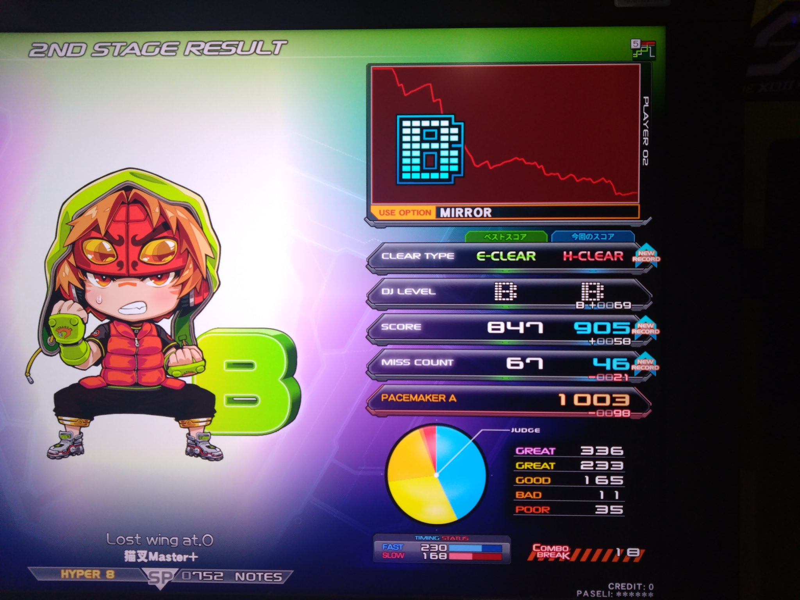

自己紹介 とか
2024/08/07 公開こんにちは。ツンツンと申します。
とりあえず経歴を
電気通信大学Ⅲ類二年の普通の学生です
趣味はゲーム、最近は音ゲーにはまっています。 弐寺やってます。Level9 あたりをイージー、Level8の下位をハード付き始めるぐらいの実力です。
後はそろそろ天空璋EXを解放したいな～って思ってます。(摩多羅隠岐奈が強すぎる...)
このブログの予定とか
このブログは普通に日常的なものを書いていきたいのと学習の備忘録的なものを作っていきたいと思っています。(自己満な気がしないでもないけどまあいっか) まあ是非Twitterだかで#備忘のアポカリプスとかつけて感想をツイートしてくれれば私が喜びます。ブログ内でのおかしなところ(特にリンク関連)は見つけたら是非お知らせください。お願いします
なんでこんなタイトルなの?
この備忘のアポカリプスというタイトルにしたのは、私が備忘録としてこのブログが誰かのアポカリプス(啓示,天啓)になってくれたら嬉しいからです...まあかっこいいからって感じでつけたんだけどね!!()
ということでゆるくブログ書いていければいきたいです。皆様よろしくお願いいたします。m(_ _"m)